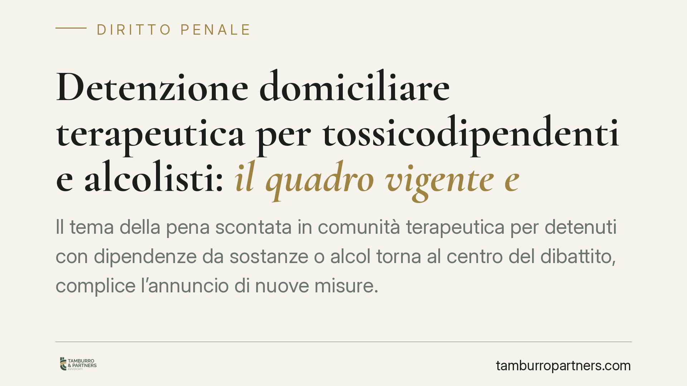

Detenzione domiciliare terapeutica per tossicodipendenti e alcolisti: il quadro vigente e le prospettive di riforma
Il tema della pena scontata in comunità terapeutica per detenuti con dipendenze da sostanze o alcol torna al centro del dibattito, complice l'annuncio di nuove misure. È l'occasione per fare chiarezza sul quadro normativo effettivamente in vigore: quali strumenti esistono oggi, con quali limiti di pena e con quale margine di valutazione da parte del giudice.

Premessa: distinguere il diritto vigente dalle proposte in discussione
Negli ultimi mesi sono circolate notizie su nuove regole per l'accesso alla detenzione in strutture terapeutiche per persone con dipendenze da droga o alcol, con date di entrata in vigore collocate nel 2026.
Su questo punto è doverosa una precisazione di metodo. Non risultano ad oggi estremi verificabili di una legge già promulgata e in vigore in tale materia con quel contenuto. Quando un intervento normativo è ancora allo stato di disegno o proposta di legge, non produce effetti fino all'approvazione definitiva e alla pubblicazione in Gazzetta Ufficiale, con la vacatio prevista. Trattiamo quindi il quadro oggi applicabile, segnalando che eventuali modifiche andranno lette solo una volta approvate e verificate negli estremi ufficiali.
Inquadramento normativo
Il fondamento costituzionale è l'art. 27, comma 3, della Costituzione: le pene devono tendere alla rieducazione del condannato. Da qui la logica delle misure che, in presenza di un percorso terapeutico, consentono di scontare la pena fuori dal carcere.
Lo strumento cardine per chi ha problemi di dipendenza è l'affidamento in prova in casi particolari, disciplinato dall'art. 94 del D.P.R. 309/1990 (Testo unico stupefacenti). Può accedervi chi è tossicodipendente o alcoldipendente e ha in corso, o intende intraprendere, un programma di recupero. Il limite di pena è più elevato rispetto all'affidamento ordinario: la misura è ammessa quando la pena detentiva, anche residua, non supera i sei anni (quattro anni per taluni reati di particolare gravità indicati dalla legge). Occorre la certificazione dello stato di dipendenza e l'idoneità del programma, redatto d'intesa con un servizio pubblico (Ser.D.) o con una struttura accreditata.
Accanto a questo, restano le misure generali dell'ordinamento penitenziario: l'affidamento in prova ordinario (art. 47 L. 354/1975) e la detenzione domiciliare (art. 47-ter L. 354/1975). La detenzione domiciliare ordinaria si sconta presso l'abitazione o altro luogo di privata dimora; quella collegata al recupero da dipendenze si svolge tipicamente presso una struttura terapeutica residenziale (comunità), con regime, obblighi e controlli propri del programma. È una differenza sostanziale: nel primo caso il vincolo è domiciliare, nel secondo è terapeutico-residenziale.
Implicazioni pratiche
Per il detenuto con dipendenza e per i familiari, il punto chiave è che non esiste alcun automatismo. La sussistenza dei requisiti apre la porta all'istanza, ma la valutazione del Tribunale di Sorveglianza resta discrezionale: pesano la concreta idoneità del programma, i precedenti, il comportamento intramurario, il rischio di recidiva.
Rispetto alla detenzione domiciliare ordinaria, l'affidamento terapeutico ex art. 94 offre un tetto di pena più alto proprio in ragione della finalità di cura, ma impone un impegno più stringente: aderire al programma, rispettarne le prescrizioni, sottoporsi ai controlli. L'interruzione o l'abbandono del percorso può condurre alla revoca della misura e al rientro in carcere, così come nuove condotte penalmente rilevanti.
Sul piano delle recidive, la sola condizione di dipendenza non è titolo sufficiente: va dimostrata la reale volontà di recupero e l'assenza di indici di pericolosità incompatibili con la misura. Eventuali riforme che ampliassero l'accesso non muterebbero questa impostazione di fondo, che risponde a esigenze di sicurezza.
Cosa fare in concreto
- Acquisire la certificazione dello stato di tossicodipendenza o alcoldipendenza presso il Ser.D. competente o struttura pubblica abilitata.
- Predisporre per tempo il programma terapeutico, concordandolo con il servizio o con una comunità accreditata, con indicazione di sede, durata e prescrizioni.
- Verificare il tetto di pena applicabile al caso concreto e le eventuali esclusioni legate al titolo di reato prima di formulare l'istanza.
- Documentare il percorso già avviato e ogni elemento sul comportamento e sulla situazione personale utile alla valutazione del Tribunale di Sorveglianza.
- Monitorare gli sviluppi normativi solo attraverso fonti ufficiali (Gazzetta Ufficiale), senza confidare in misure non ancora in vigore.
È opportuno predisporre l'istruttoria con anticipo: la completezza documentale incide sulla concreta valutabilità dell'istanza, pur senza costituire garanzia di accoglimento.
---
Contributo informativo a cura di Tamburro & Partners - Avv. Giuseppe Tamburro. Non costituisce parere legale.
Ogni condominio ha una storia a sé.
Se gestisci un'amministrazione e vuoi un confronto su una specifica questione condominiale, scrivi allo studio. Ti rispondiamo entro un giorno lavorativo.